Forebrain
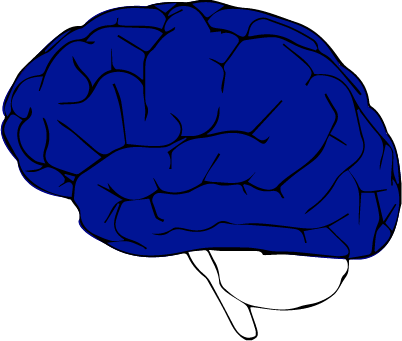The forebrain is one of the three main regions of the brain. All subregions of the frontal lobe play a central role in the processing of information related to our higher functions such as sensory and associative functions, voluntary motor movements, future planning, decision making, impulse control, and many other complex cognitive abilities. The forebrain has two main sub-sections: the cerebrum (the outer cortex) and the diencephalon (the inner cortex).
Cerebrum

The cerebrum, or as many people know it the cerebral cortex, is the outer cortex of the forebrain that plays a central role in developing the human consciousness.It is split into four different lobes that are responsible for processing different types of sensory information.
Frontal Lobe
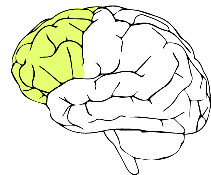The frontal lobe is the most anterior lobe of the brain and sits right above the eyes. The frontal lobe was the last area in the brain to develop and the complexity of it is correlated to the advancedness of a certain species. The frontal lobe is responsible for many high functioning processes such as future planning, impulse control, decision-making and many other complex functions. Some of the more interesting areas of the frontal lobe are the primary motor cortex , premotor cortex , and Broca's area .
Primary Motor Cortex
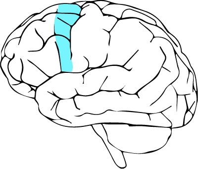The primary motor cortex is the area of the frontal lobe that controls the execution of most voluntary movements and is located in the posterior part of the frontal lobe. All body parts are represented somatotopically in the cortex -- i.e the fingers are next to the hand which is next to the arm etc.
Premotor Cortex
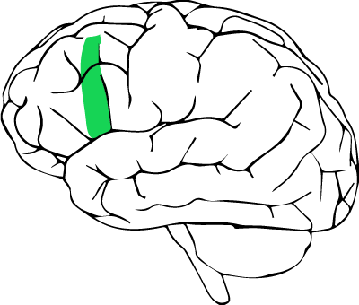The premotor cortex is the area of the frontal lobe that is thought to be in control of executive function (the ability to determine bad and good, better and best, social control, etc.). It is located in the anterior portion of the frontal lobe.
Broca's Area
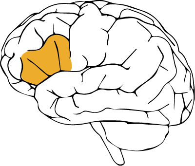Broca's area is the part of the frontal lobe that is responsible for the production of speech. It is located in the anterior left lateral portion of the frontal lobe.
Temporal Lobe
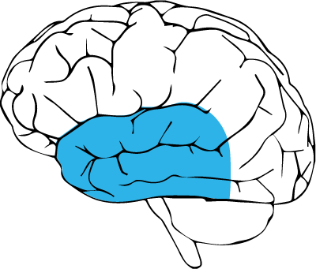The temporal lobes are located on each side of the brain behind the ears. The temporal lobe is mainly responsible for the processing of auditory information for visual memory, language comprehension and emotion association. Some interesting areas of the temporal lobe are the hippocampus , Wernicke's area , and the entorhinal cortex
Hippocampus
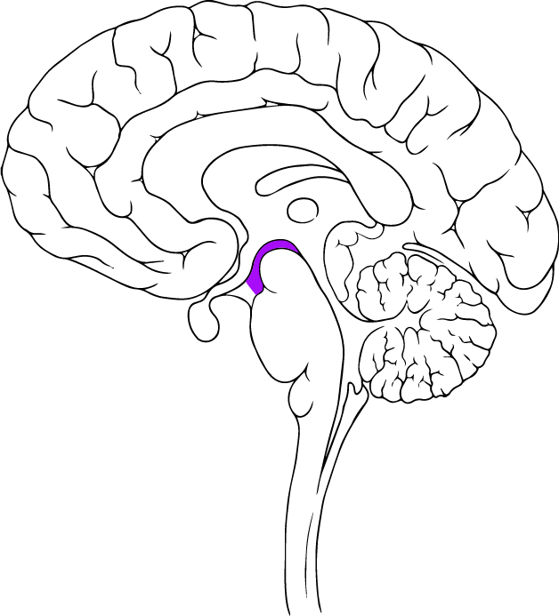The hippocampus is the sea horse shaped region in the temporal lobe that is primarily associated with memory. Most of our short term meory is processed in this region of the brain.
Wernicke's Area
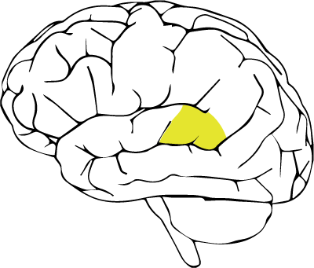Wernicke's area is a portion of the temporal lobe where language comprehension takes place.
Entorhinal Cortex
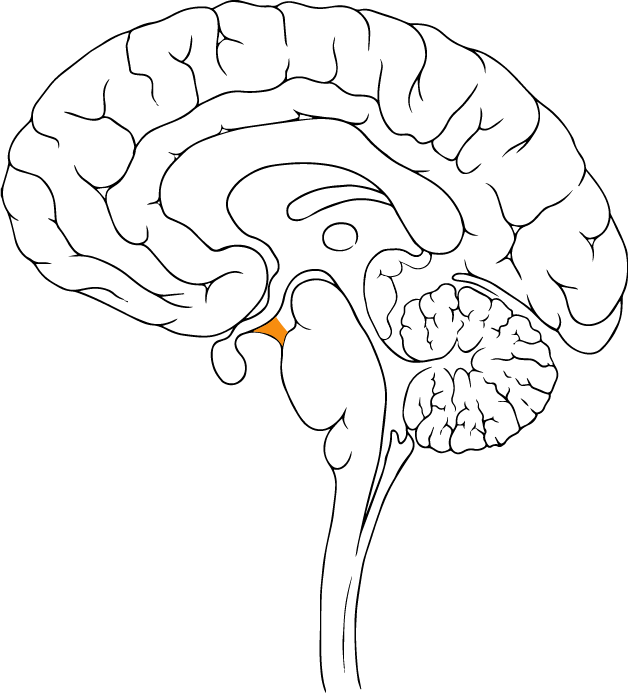The entorhinal cortex is the main gateway between the hippocampus and neocortex for the formation of long term memory.
Parietal Lobe
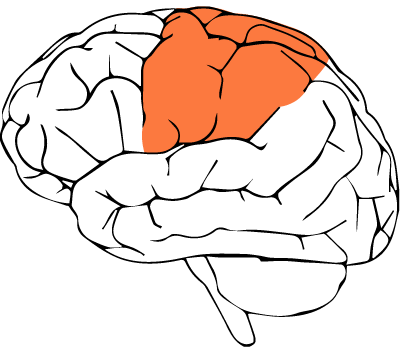The parietal lobe is positioned posterior to the frontal lobe and superior to the temporal lobes. The parietal lobe receives and processes sensory information from all around the body. One interesting area of the parietal is the somatosensory cortex.
Somatosensory Cortex
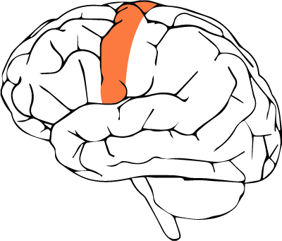The somatosensory cortex is an area in the parietal lobe that is responsible for processing touch sensation. Much like the primary motor cortex the sensations from the body parts are represented somatotopically.
Occipital Lobe
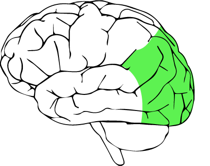The occipital lobe is the most anteriorly placed lobe in the brain and sits above the cerebellum. The occipital lobe is primarily responsible for receiving and processing all visual information. Some of the interesting aspects of the occipital lobe are the primary visual cortex , the ventral stream , the dorsal stream , and the fusiform face area .
Primary Visual Cortex
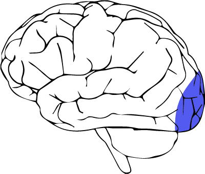The primary visual cortex is the section of the occipital lobe that receives visual sensory information directly from the retina.
Ventral Stream
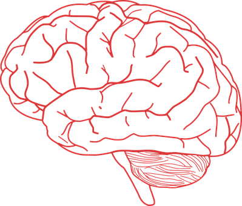The ventral stream is the processing pathway from the occipital lobe to the parietal lobe that is concerned with object and visual information identification. Also known as the “what pathway”.
Dorsal Stream
The dorsal stream is he pathway from the occipital lobe to the temporal lobe that is concerned with processing the spatial location of an object. Also known as the “where pathway”.
Fusiform Face Area (FFA)
The FFA is an area in the occipital lobe within the fusiform gyrus that is concerned with the recognition of human faces.
Diencephalon
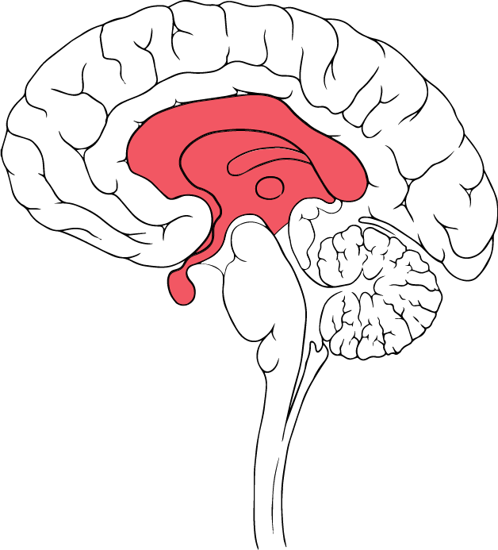The diencephalon is the part of the brain that is situated between the cerebrum and the midbrain. It contains the thalamus , hypothalamus , and the epithalamus .
Thalamus
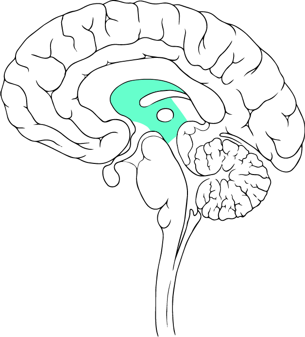The thalamus is a mass of neurons that spans over both hemispheres of the brain. It is the largest part of the diencephalon. It’s primary function is to act as a relay station between the two hemispheres of the brain. Without the thalamus, the brain hemispheres cannot communicate.
Hypothalamus
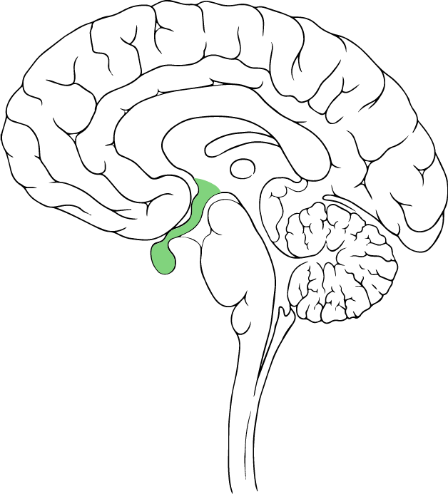The hypothalamus is located on the ventral side of the thalamus near the pituitary gland. It plays a key role in releasing hormones, regulating body temperature, maintaining daily physiological cycles, controlling appetite, managing sexual behavior, and regulating emotional responses.
Epithalamus
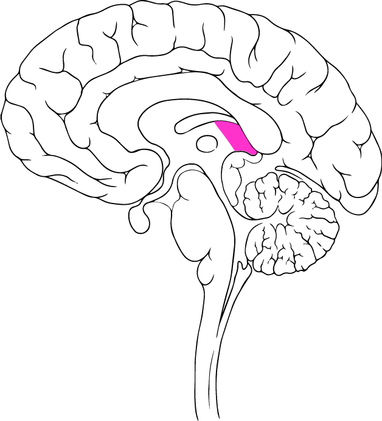The epithalamus is the posterior segment of the diencephalon. It’s primary function is to connect the limbic system to other parts of the brain.